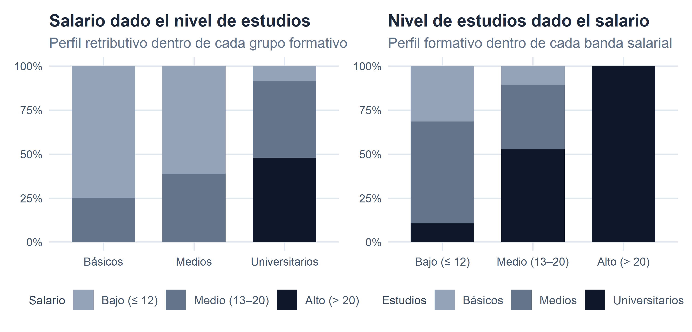
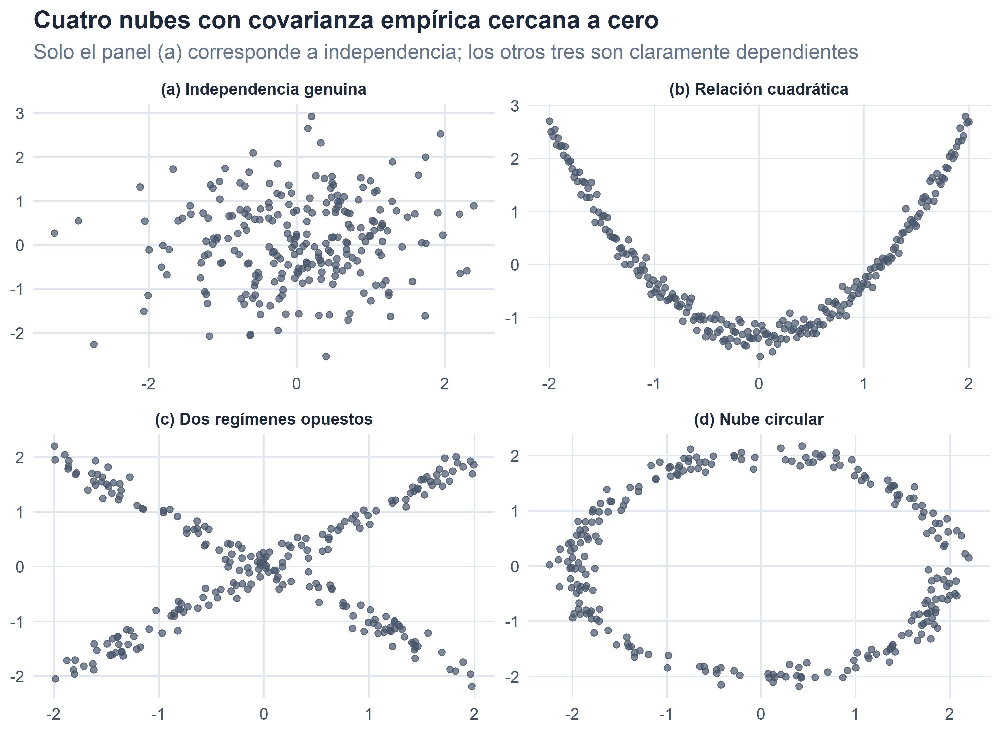
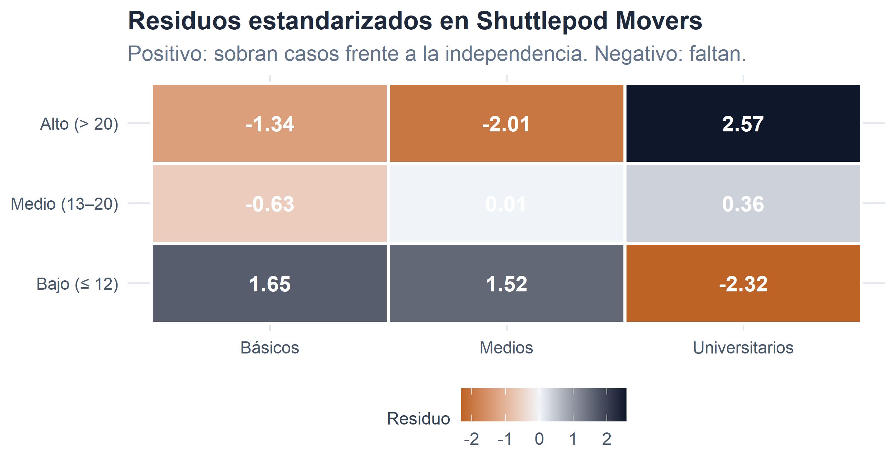

4 Variable estadística bidimensional y n-dimensional.

Figura 4.1. Cuando la información se cruza: dos variables, una historia.
En los dos capítulos anteriores hemos aprendido a describir una característica cada vez. Ese análisis univariante es el punto de partida imprescindible, pero rara vez es el objetivo final. La mayor parte de las preguntas interesantes en Economía y Empresa nacen del cruce de dos o más variables: ¿ganan más los universitarios?, ¿son las compañías más grandes también las más rentables?, ¿los cargueros más antiguos tienen más tonelaje?, ¿asocian los distintos astilleros sus bases operativas a las mismas galaxias? En todos estos casos, la pregunta no puede contestarse mirando una única variable: hace falta poner dos características simultáneamente sobre cada individuo y estudiar cómo se relacionan.
Este capítulo, y el siguiente, son el bloque del curso dedicado al análisis bidimensional (y, por extensión, \(n\)-dimensional). La división del trabajo entre ambos es la siguiente:
En este capítulo la pregunta es cualitativa: ¿existe o no existe relación estadística entre las dos variables? Aprenderemos a organizar la información en una tabla de doble entrada, a leer los distintos tipos de distribuciones que ella contiene, a definir formalmente la independencia estadística y a comprobar si nuestra tabla la satisface. Introduciremos también la covarianza —un primer resumen numérico del tipo de relación entre dos variables cuantitativas— y las tablas de contingencia entre atributos, con una descripción intuitiva de la prueba ji-cuadrado.
En el capítulo 4, dando por hecho que existe algún tipo de relación, las preguntas serán cuantitativas: ¿cuán intensa es esa relación? ¿de qué forma es? Entrará entonces en escena el coeficiente de correlación lineal —una versión adimensional y acotada de la covarianza— y los modelos de regresión que permiten aproximar una variable a partir de otra.
Este orden lógico —primero verificar la existencia de relación, después medir su intensidad y su forma— es el mismo que sigue cualquier análisis empírico serio. Un buen econometrista jamás ajusta una regresión sin explorar antes si tiene sentido hacerlo.
4.1 De una a dos variables: la tabla de correlación.
Cuando en cada individuo medimos dos características, la distribución de frecuencias se organiza en una tabla de doble entrada. Cada fila corresponde a un valor (o clase de valores) de la primera variable, cada columna a un valor de la segunda, y cada casilla anota cuántos casos presentan simultáneamente esa combinación. A esa tabla la llamaremos tabla de correlación —cuando ambas variables son cuantitativas— o, más genéricamente y sobre todo cuando alguna de las dos es cualitativa, tabla de contingencia. Ambas comparten estructura y notación.
Denotemos por \(x_1, x_2, \ldots, x_h\) los \(h\) valores distintos que toma la variable \(X\) y por \(y_1, y_2, \ldots, y_k\) los \(k\) valores que toma la variable \(Y\). La tabla resultante tiene \(h\) filas y \(k\) columnas. En su celda \((i, j)\) aparece la frecuencia absoluta conjunta \(n_{ij}\), definida como
\[ n_{ij} \;=\; \text{número de casos que presentan simultáneamente } x_i \text{ e } y_j. \]
Sumando por filas obtenemos las frecuencias marginales de \(X\),
\[ n_{i\bullet} \;=\; \sum_{j=1}^{k} n_{ij}, \]
que indican cuántos casos toman el valor \(x_i\) con independencia del valor que tomen en \(Y\). Análogamente, sumando por columnas obtenemos las frecuencias marginales de \(Y\),
\[ n_{\bullet j} \;=\; \sum_{i=1}^{h} n_{ij}. \]
Y como ningún caso puede escaparse por ninguna de las dos vías, se cumple
\[ \sum_{i=1}^{h} n_{i\bullet} \;=\; \sum_{j=1}^{k} n_{\bullet j} \;=\; \sum_{i=1}^{h}\sum_{j=1}^{k} n_{ij} \;=\; N. \]
Esquemáticamente, la tabla tiene el siguiente aspecto:
| \(X \setminus Y\) | \(y_1\) | \(y_2\) | \(\cdots\) | \(y_k\) | Marg. \(X\) |
|---|---|---|---|---|---|
| \(x_1\) | \(n_{11}\) | \(n_{12}\) | \(\cdots\) | \(n_{1k}\) | \(n_{1\bullet}\) |
| \(x_2\) | \(n_{21}\) | \(n_{22}\) | \(\cdots\) | \(n_{2k}\) | \(n_{2\bullet}\) |
| \(\vdots\) | \(\vdots\) | \(\vdots\) | \(\ddots\) | \(\vdots\) | \(\vdots\) |
| \(x_h\) | \(n_{h1}\) | \(n_{h2}\) | \(\cdots\) | \(n_{hk}\) | \(n_{h\bullet}\) |
| Marg. \(Y\) | \(n_{\bullet 1}\) | \(n_{\bullet 2}\) | \(\cdots\) | \(n_{\bullet k}\) | \(N\) |
Tabla 4.1
Las distribuciones marginales son, sencillamente, las distribuciones univariantes de \(X\) y de \(Y\) vistas por separado, ignorando la otra variable. Toda la maquinaria del capítulo anterior —medidas de posición, dispersión y forma— sigue aplicándose sobre ellas.
4.1.1 Un ejemplo: la plantilla de Shuttlepod Movers.
Retomamos una vieja conocida: la plantilla de Shuttlepod Movers, la compañía galáctica con sede en Arrakis a la que ya nos asomamos en el capítulo 2 para comparar su dispersión salarial con la de Hyperdrive Express. De sus \(N = 49\) empleados disponemos ahora, además del salario mensual (en cientos de PAVOs), de su nivel de estudios: Básicos, Medios o Universitarios. La pregunta natural, la que su departamento de recursos humanos podría hacerle a cualquier analista, es: ¿tienen algo que ver salario y estudios en esta plantilla?.
Antes de contestar necesitamos organizar la información. Las primeras filas del fichero se ven así:
| Empleado | Salario | Nivel de estudios | Departamento |
|---|---|---|---|
| Luke Diomedea | 8 | Básicos | Almacén |
| Han Bubo | 8 | Medios | Almacén |
| Anakin Falco | 9 | Básicos | Almacén |
| Spock Phoenicopterus | 9 | Básicos | Almacén |
| James Larus | 9 | Medios | Gestión Interna |
Tabla 4.2. Primeros casos del fichero de empleados de Shuttlepod Movers.
Como el salario toma bastantes valores distintos —tantos como niveles retributivos hay en la compañía—, empezamos por una versión agrupada en tres intervalos salariales cómodos, que facilitan la vista sin distorsionar la estructura:
- Salario Bajo: \(\le 12\) cientos de PAVOs.
- Salario Medio: entre \(13\) y \(20\) cientos de PAVOs.
- Salario Alto: \(> 20\) cientos de PAVOs.
| \(X \setminus Y\) | Básicos | Medios | Universitarios | Marg. \(X\) |
|---|---|---|---|---|
| Bajo (≤ 12) | 6 | 11 | 2 | 19 |
| Medio (13–20) | 2 | 7 | 10 | 19 |
| Alto (> 20) | 0 | 0 | 11 | 11 |
| Marg. Y | 8 | 18 | 23 | 49 |
Tabla 4.3. Salario (\(X\)) y nivel de estudios (\(Y\)) en la plantilla de Shuttlepod Movers. Frecuencias absolutas conjuntas y marginales.
La estructura de la tabla salta a la vista. Los \(49\) empleados se reparten en \(3\times 3 = 9\) celdas conjuntas; las marginales de \(X\) (última columna) dicen cuántos empleados hay en cada tramo salarial, con independencia de sus estudios; las marginales de \(Y\) (última fila) cuentan cuántos empleados hay en cada nivel formativo, con independencia del salario que perciban.
4.1.2 Frecuencias relativas.
Como en el caso univariante, las frecuencias absolutas admiten una segunda lectura en términos relativos. Cada casilla se divide por el total \(N\) para obtener la proporción del colectivo que satisface esa combinación:
\[ f_{ij} \;=\; \frac{n_{ij}}{N}, \qquad f_{i\bullet} \;=\; \frac{n_{i\bullet}}{N}, \qquad f_{\bullet j} \;=\; \frac{n_{\bullet j}}{N}. \]
Todas las frecuencias relativas conjuntas suman uno, igual que sumaban uno las de una distribución unidimensional; el añadido es que aquí lo hacen extendidas sobre las nueve celdas:
\[ \sum_{i=1}^{h}\sum_{j=1}^{k} f_{ij} \;=\; 1. \]
Para Shuttlepod:
| \(X \setminus Y\) | Básicos | Medios | Universitarios | Marg. \(X\) |
|---|---|---|---|---|
| Bajo (≤ 12) | 0.1224 | 0.2245 | 0.0408 | 0.3878 |
| Medio (13–20) | 0.0408 | 0.1429 | 0.2041 | 0.3878 |
| Alto (> 20) | 0.0000 | 0.0000 | 0.2245 | 0.2245 |
| Marg. Y | 0.1633 | 0.3673 | 0.4694 | 1.0000 |
Tabla 4.4. Frecuencias relativas conjuntas y marginales en Shuttlepod Movers.
Lectura: aproximadamente el \(20{,}4\,\%\) de la plantilla (proporción \(0{,}2041\)) cobra un salario medio y tiene estudios universitarios; algo más del \(46\,\%\) tiene estudios universitarios y el \(16\,\%\) estudios básicos, con independencia del salario. Etcétera.
4.1.3 Distribuciones condicionadas.
Las frecuencias marginales resumen cada variable por separado; las conjuntas indican cómo se cruzan. Falta una tercera lectura, la más útil para explorar relaciones: la de las distribuciones condicionadas. Preguntémonos: dado que un empleado tiene estudios universitarios, ¿cómo se reparte su salario? La respuesta requiere fijar \(Y = \text{Universitarios}\) y calcular la proporción de casos que caen en cada tramo salarial entre los universitarios.
Formalmente, la frecuencia condicionada de \(X = x_i\) dado que \(Y = y_j\) se define como
\[ f_{X = x_i \mid Y = y_j} \;=\; \frac{n_{ij}}{n_{\bullet j}}. \]
Simétricamente, la frecuencia condicionada de \(Y = y_j\) dado que \(X = x_i\) es
\[ f_{Y = y_j \mid X = x_i} \;=\; \frac{n_{ij}}{n_{i\bullet}}. \]
En cada caso el denominador es la frecuencia marginal correspondiente: en el primero, dividimos por el total de la columna \(j\) (los casos que satisfacen la condición \(Y = y_j\)); en el segundo, por el total de la fila \(i\). Las condicionadas suman uno dentro del grupo condicionante, no globalmente:
\[ \sum_{i=1}^{h} f_{X = x_i \mid Y = y_j} = 1 \quad \text{para cada } j, \qquad \sum_{j=1}^{k} f_{Y = y_j \mid X = x_i} = 1 \quad \text{para cada } i. \]
En Shuttlepod Movers, las distribuciones de salario condicionadas al nivel de estudios son:
| Salario | \(Y=\) Básicos | \(Y=\) Medios | \(Y=\) Universitarios |
|---|---|---|---|
| Bajo (≤ 12) | 0.75 | 0.6111 | 0.0870 |
| Medio (13–20) | 0.25 | 0.3889 | 0.4348 |
| Alto (> 20) | 0.00 | 0.0000 | 0.4783 |
Tabla 4.5. Distribución del salario condicionada al nivel de estudios (cada columna suma 1).
La lectura es reveladora: entre los empleados con estudios básicos, el \(75\,\%\) está en el tramo salarial bajo y ninguno en el tramo alto; entre los universitarios, ninguno está en el tramo bajo y prácticamente la mitad en el alto. Las tres columnas —los tres perfiles retributivos condicionados al nivel de estudios— son distintas entre sí y también distintas de la marginal de salario. Esa desigualdad de perfiles es lo que enseguida caracterizaremos formalmente como dependencia estadística.
Antes de dar ese paso conviene detenerse un momento en un matiz importante. La misma tabla admite ser leída en la dirección contraria: en lugar de preguntarnos cómo se distribuye el salario dentro de cada nivel de estudios, podríamos preguntarnos cómo se distribuyen los niveles de estudios dentro de cada tramo salarial. En términos formales, pasamos de condicionar a \(Y\) (los estudios) a condicionar a \(X\) (el salario), y las frecuencias son ahora \(f_{Y = y_j \mid X = x_i} = n_{ij}/n_{i\bullet}\): las filas —no las columnas— suman uno.
| Salario | \(Y=\) Básicos | \(Y=\) Medios | \(Y=\) Universitarios |
|---|---|---|---|
| Bajo (≤ 12) | 0.3158 | 0.5789 | 0.1053 |
| Medio (13–20) | 0.1053 | 0.3684 | 0.5263 |
| Alto (> 20) | 0.0000 | 0.0000 | 1.0000 |
Tabla 4.6. Distribución del nivel de estudios condicionada al tramo salarial (cada fila suma 1).
La foto que emerge es distinta —y muy expresiva—. Entre los empleados de salario bajo, la mayoría (\(58\,\%\)) tiene estudios medios y una parte considerable (\(32\,\%\)) solo estudios básicos; los universitarios son minoría (\(11\,\%\)). Entre los de salario alto, en cambio, el \(100\,\%\) son universitarios: en la plantilla no hay un solo empleado que gane más de \(20\) cientos de PAVOs sin titulación universitaria. Es la misma información que la tabla anterior, reorganizada al servicio de otra pregunta.
Que ambas lecturas tengan interés no es una casualidad conceptual: cada una responde a una pregunta distinta que un analista real puede plantear. La condicional \(f_{X \mid Y}\) contesta al asesor de carrera (“si eres universitario, ¿qué ingresos puedes esperar?”); la condicional \(f_{Y \mid X}\) contesta al departamento de recursos humanos que analiza el perfil formativo de cada banda salarial (“¿qué formación tienen los que hoy están en el tramo alto?”). En el capítulo siguiente descubriremos que esta doble perspectiva reaparece con toda su fuerza en el análisis de regresión, donde a un mismo cruce le corresponden dos rectas distintas —la de \(Y\) sobre \(X\) y la de \(X\) sobre \(Y\)—, ambas legítimas y con lecturas complementarias.
Un gráfico de barras apiladas al \(100\,\%\) compara las dos perspectivas de un solo golpe de vista y hace visible cómo cada dirección de condicionalidad ilumina una faceta distinta del mismo cruce:

Figura 4.2
Dos preguntas, un solo cruce, dos gráficos: la asimetría interpretativa aparece a plena luz. En la barra de la derecha, “salario alto” es una torre monocolor —todo universitarios—; en la de la izquierda, “universitarios” reparte casi por igual entre los tres tramos salariales. La relación existe, pero cómo la nombramos depende de la dirección desde la que la miremos.
4.2 Independencia y dependencia estadística.
Con la tabla anterior ya hemos hecho, de manera intuitiva, la comprobación central del capítulo. Vamos ahora a formalizarla.
Diremos que dos características \(X\) e \(Y\) son estadísticamente independientes cuando conocer el valor de una no aporta información sobre el valor que tomará la otra. En términos operativos: si \(X\) e \(Y\) son independientes, la distribución de \(X\) condicionada a cualquier valor de \(Y\) es idéntica a la marginal de \(X\). Da igual el grupo de \(Y\) del que provenga el individuo: la distribución de \(X\) es la misma.
\[ \underbrace{f_{X = x_i \mid Y = y_j}}_{\text{condicionada}} \;=\; \underbrace{f_{i\bullet}}_{\text{marginal}}, \qquad \forall\, i, j. \]
Igualdades análogas se cumplen intercambiando los papeles de \(X\) e \(Y\): si conocer \(Y\) no informa sobre \(X\), tampoco conocer \(X\) informa sobre \(Y\). La independencia es, por tanto, una propiedad simétrica.
Cuando la definición anterior no se cumple —es decir, cuando la distribución de \(X\) cambia según el valor de \(Y\), o cuando el perfil condicionado difiere del marginal en al menos una celda— diremos que \(X\) e \(Y\) presentan dependencia estadística. Esa dependencia puede ser leve o intensa, sistemática o irregular; en este capítulo nos limitaremos a detectarla. Su cuantificación es la tarea del capítulo siguiente.
4.2.1 La condición operativa: producto de marginales.
Manipulando algebraicamente la definición anterior se llega a una versión mucho más cómoda de comprobar. Partiendo de
\[ \frac{n_{ij}}{n_{\bullet j}} \;=\; \frac{n_{i\bullet}}{N}, \]
despejamos:
\[ n_{ij} \;=\; \frac{n_{i\bullet}\cdot n_{\bullet j}}{N}, \]
y, dividiendo ambos lados por \(N\),
\[ \boxed{\,f_{ij} \;=\; f_{i\bullet}\cdot f_{\bullet j}, \qquad \forall\, i, j.\,} \]
Es decir: hay independencia si, y solo si, cada frecuencia relativa conjunta es igual al producto de las marginales correspondientes. Esta es la formulación con la que trabajaremos en la práctica. Repárese en el “y solo si”: la igualdad debe cumplirse en todas las celdas de la tabla. Basta con que una sola se aparte para que la relación deje de ser independencia y aparezca —como enseguida veremos— algún tipo de dependencia.
De la condición anterior se deduce también una manera muy útil de leerla: si hay independencia, la frecuencia conjunta esperada en la celda \((i,j)\), dada la información marginal, sería
\[ n^{*}_{ij} \;=\; \frac{n_{i\bullet}\cdot n_{\bullet j}}{N}. \]
Estas frecuencias esperadas bajo independencia volverán a aparecer, con el mismo protagonismo, cuando hablemos de tablas de contingencia y de la prueba ji-cuadrado.
4.2.2 Un ejemplo pedagógico: independencia “perfecta”.
Para ver cómo se comporta la condición cuando sí se cumple, hagamos un pequeño desvío por la contabilidad de Corellian Freightworks, la mayor compañía de carga del sector R-Stars con sede en Qo’noS (Galaxia del Triángulo). Tras la reciente absorción de dos operadores menores, su directora financiera —convencida de que armonizar la política retributiva mejoraría la moral general de la plantilla combinada— ha encargado un breve informe cruzando, para sus \(N = 259\) empleados, el salario mensual \(X\) (en cientos de PAVOs) con el gasto mensual \(Y\) en la cantina corporativa (hologames, bebidas de dudoso color y espectáculo en vivo, todo incluido; también en cientos de PAVOs). La hipótesis de partida parecía razonable: quien más cobra, más se deja en la cantina. La tabla que ha aterrizado en el despacho de la directora es esta:
| \(X \setminus Y\) | 1 | 2 | 3 | Marg. \(X\) |
|---|---|---|---|---|
| 20 | 20 | 40 | 10 | 70 |
| 30 | 30 | 60 | 15 | 105 |
| 40 | 24 | 48 | 12 | 84 |
| Marg. Y | 74 | 148 | 37 | 259 |
Tabla 4.7. Salario (\(X\)) y gasto mensual en la cantina corporativa (\(Y\)) en la plantilla combinada de Corellian Freightworks.
¿Cumple la tabla la condición de independencia? Comprobemos la primera celda:
\[ f_{11} \;=\; \frac{20}{259} \;\approx\; 0{,}0772, \qquad f_{1\bullet}\cdot f_{\bullet 1} \;=\; \frac{70}{259}\cdot \frac{74}{259} \;\approx\; 0{,}2703 \cdot 0{,}2857 \;\approx\; 0{,}0772. \]
Coinciden. Y si repetimos el ejercicio en las nueve celdas, la igualdad se cumple en todas ellas. Podemos concluir que salario y gasto en cantina son, en Corellian Freightworks, estadísticamente independientes: saber cuánto cobra un empleado no aporta ninguna información sobre cuánto se dejará el mes que viene entre hologames y bebidas de la cantina.
Un modo más rápido de verlo, sin repetir la comprobación celda a celda, es contrastar la tabla de condicionadas con la marginal:
| Salario | \(Y=1\) | \(Y=2\) | \(Y=3\) |
|---|---|---|---|
| 20 | 0.2703 | 0.2703 | 0.2703 |
| 30 | 0.4054 | 0.4054 | 0.4054 |
| 40 | 0.3243 | 0.3243 | 0.3243 |
Tabla 4.8. Distribución del salario (\(X\)) condicionada al gasto en cantina (\(Y\)) en Corellian Freightworks. Todas las columnas son idénticas.
Todas las columnas son iguales entre sí y coinciden con la marginal de \(X\) (\(0{,}2703;\ 0{,}4054;\ 0{,}3243\)). Es la traducción visual exacta de la independencia: el perfil salarial no cambia entre los tres grupos de consumo cantinero. La directora financiera de Corellian, a la vista de los números, ha tenido que revisar sus premisas: en su plantilla, la propensión a fundirse el sueldo en la cantina parece ser una constante universal, insensible al importe de la nómina. El ajuste retributivo tendrá que buscar otra justificación.
4.2.3 Un ejemplo real: la plantilla de Shuttlepod Movers.
Comparemos ahora la situación anterior con lo que ocurre en Shuttlepod Movers. Retomamos la tabla de frecuencias conjuntas y calculamos, para cada celda, el producto de marginales que debería aparecer bajo independencia:
| Salario | Estudios | \(n_{ij}\) | \(n^{*}_{ij}\) | \(n_{ij} - n^{*}_{ij}\) |
|---|---|---|---|---|
| Bajo (≤ 12) | Básicos | 6 | 3.10 | 2.90 |
| Bajo (≤ 12) | Medios | 11 | 6.98 | 4.02 |
| Bajo (≤ 12) | Universitarios | 2 | 8.92 | -6.92 |
| Medio (13–20) | Básicos | 2 | 3.10 | -1.10 |
| Medio (13–20) | Medios | 7 | 6.98 | 0.02 |
| Medio (13–20) | Universitarios | 10 | 8.92 | 1.08 |
| Alto (> 20) | Básicos | 0 | 1.80 | -1.80 |
| Alto (> 20) | Medios | 0 | 4.04 | -4.04 |
| Alto (> 20) | Universitarios | 11 | 5.16 | 5.84 |
Tabla 4.9. Frecuencias observadas (\(n_{ij}\)) frente a esperadas bajo independencia (\(n^{*}_{ij}\)) en Shuttlepod Movers.
La lectura es contundente. Bajo independencia, en el cruce de “salario bajo” y “estudios universitarios” deberíamos observar unas \(8{,}92\) personas; observamos \(2\). En el cruce de “salario alto” y “estudios universitarios” esperaríamos \(5{,}16\); observamos \(11\). Las diferencias entre lo observado y lo esperado son sistemáticas: sobran universitarios en salarios altos, sobran empleados con estudios básicos en salarios bajos, y faltan casos en las combinaciones “cruzadas”. No es lo que produciría una asignación aleatoria en la que salario y estudios fueran independientes.
Diremos entonces que salario y nivel de estudios en Shuttlepod Movers presentan dependencia estadística.
4.2.4 Dependencia estadística y causalidad.
Antes de seguir es importante aclarar un punto que suele confundirse. La sola tabla no nos dice si esa dependencia se debe a un efecto causal (los estudios abren puertas a puestos mejor pagados), a un efecto indirecto (los universitarios ocupan puestos que además exigen antigüedad, y es la antigüedad la que retribuye mejor), o a una combinación de ambos. La distinción merece un aviso claro:
Dependencia estadística no es causalidad. Que salario y estudios se muevan juntos en el fichero no implica que estudiar más cause cobrar más. La causa podría estar en una tercera variable no observada, o el sentido causal podría ser el opuesto al que sugiere el sentido común. La estadística descriptiva detecta coincidencias sistemáticas entre variables; determinar si esas coincidencias reflejan una relación causal es una tarea distinta, que exige un diseño de investigación adicional (experimental o cuasi-experimental).
Este matiz volverá a aparecer, con más fuerza aún, en el capítulo siguiente al hablar de regresión.
Hay además un fenómeno adicional que merece un aviso, porque en el análisis empresarial real es fuente inagotable de conclusiones equivocadas y de titulares llamativos:
La paradoja de Simpson. Una relación observada entre dos variables puede invertirse por completo al controlar por una tercera. Un directivo de R-Stars podría, por ejemplo, comparar la rentabilidad media de las Sociedades Anónimas Galácticas (SAG) y las Sociedades Limitadas Galácticas (SLG) sobre las \(300\) compañías del fichero y encontrar que las SAG rinden mejor. Pero si separara la comparación por sector de actividad —transporte de carga, transporte de pasajeros, servicios auxiliares— podría descubrir que, dentro de cada sector por separado, son las SLG las que superan a las SAG. ¿Cómo puede ser? La explicación está en la composición: la mayoría de las SAG operan en un sector estructuralmente más rentable, y esa mezcla desigual arrastra el promedio global en dirección contraria a lo que ocurre en cada grupo homogéneo.
La paradoja no es una curiosidad matemática; es un recordatorio de que las conclusiones basadas en un cruce bidimensional pueden ser radicalmente distintas de las que emergen al añadir la variable correcta. En el análisis empresarial moderno —desde el estudio del sesgo salarial de género hasta la efectividad comparada de tratamientos médicos— la identificación de esas terceras variables (los llamados factores de confusión) es una tarea central y, con frecuencia, más difícil que el cálculo estadístico propiamente dicho.
4.3 Momentos bidimensionales.
Si ambas variables son cuantitativas, podemos ir un paso más allá de la comprobación celda a celda y resumir la relación con un número. Igual que en el análisis univariante los momentos (\(a_1, a_2, m_2, \ldots\)) nos permitían compactar toda una distribución en unos pocos indicadores, los momentos bidimensionales hacen lo propio con la distribución conjunta de \(X\) e \(Y\).
4.3.1 Momentos respecto al origen.
Dado un par de enteros no negativos \(r\) y \(s\), el momento bidimensional de orden \((r, s)\) respecto al origen se define como
\[ a_{rs} \;=\; \frac{1}{N}\sum_{i=1}^{h}\sum_{j=1}^{k} x_i^{\,r}\, y_j^{\,s}\, n_{ij}. \]
Los casos particulares que utilizaremos son cuatro y todos son ya viejos conocidos, adaptados al escenario bidimensional:
- \(a_{10} = \dfrac{1}{N}\sum_{i,j} x_i\, n_{ij} = \dfrac{1}{N}\sum_{i} x_i\, n_{i\bullet} = \overline{x}\) (media aritmética de \(X\)).
- \(a_{01} = \dfrac{1}{N}\sum_{i,j} y_j\, n_{ij} = \dfrac{1}{N}\sum_{j} y_j\, n_{\bullet j} = \overline{y}\) (media aritmética de \(Y\)).
- \(a_{20} = \dfrac{1}{N}\sum_{i,j} x_i^{\,2}\, n_{ij}\) (media de los cuadrados de \(X\)).
- \(a_{11} = \dfrac{1}{N}\sum_{i,j} x_i\, y_j\, n_{ij}\) (media del producto \(XY\)).
Los dos primeros son las medias marginales, ya conocidas; el tercero interviene en la varianza de \(X\); y el cuarto es el que aporta información específicamente bidimensional: la media del producto de las dos variables.
4.3.2 Momentos respecto a las medias: varianzas y covarianza.
Si en lugar de tomar como referencia el cero tomamos como centros a las medias marginales, obtenemos los momentos centrales:
\[ m_{rs} \;=\; \frac{1}{N}\sum_{i=1}^{h}\sum_{j=1}^{k} (x_i - \overline{x})^{r}\, (y_j - \overline{y})^{s}\, n_{ij}. \]
Tres de ellos son los que aparecen constantemente en los libros y en la práctica:
- \(m_{20} = \dfrac{1}{N}\sum_{i,j} (x_i - \overline{x})^{2}\, n_{ij} = S_x^{\,2}\) (varianza de \(X\)).
- \(m_{02} = \dfrac{1}{N}\sum_{i,j} (y_j - \overline{y})^{2}\, n_{ij} = S_y^{\,2}\) (varianza de \(Y\)).
- \(m_{11} = \dfrac{1}{N}\sum_{i,j} (x_i - \overline{x})(y_j - \overline{y})\, n_{ij} \;\equiv\; S_{xy}\) (covarianza de \(X\) e \(Y\)).
Los dos primeros son sencillamente las varianzas de cada variable calculadas sobre sus distribuciones marginales: nada nuevo respecto al capítulo anterior. La verdadera novedad es la covarianza \(S_{xy}\), que aparece por primera vez y merece un momento de atención.
Como en el caso univariante, los momentos centrales se pueden calcular a partir de los momentos respecto al origen, evitando restar la media dentro del sumatorio:
\[ \begin{aligned} S_x^{\,2} &= a_{20} - a_{10}^{\,2},\\[4pt] S_y^{\,2} &= a_{02} - a_{01}^{\,2},\\[4pt] S_{xy} &= a_{11} - a_{10}\cdot a_{01}. \end{aligned} \]
En la práctica, esto significa que para calcular la covarianza a mano basta con obtener tres cantidades sobre la tabla —\(a_{10}\), \(a_{01}\) y \(a_{11}\)— y combinarlas.
4.3.3 El signo (y la magnitud) de la covarianza.
Antes de aplicar la fórmula a un ejemplo, conviene entender qué está midiendo. La covarianza es el promedio de los productos \((x_i - \overline{x})(y_j - \overline{y})\):
- Si en un caso \(x_i\) está por encima de su media y \(y_j\) también, el producto es positivo.
- Si ambos están por debajo de sus medias, el producto vuelve a ser positivo.
- Si uno está por encima y el otro por debajo, el producto es negativo.
La covarianza recoge, por tanto, el balance entre esos productos:
- \(S_{xy} > 0\): los desvíos de \(X\) y de \(Y\) tienden a coincidir en signo. Cuando \(X\) está por encima de su media, \(Y\) también suele estarlo. Se habla de relación directa o positiva.
- \(S_{xy} < 0\): los desvíos tienden a ir en sentidos opuestos. Cuando \(X\) está por encima de su media, \(Y\) suele estar por debajo. Se habla de relación inversa o negativa.
- \(S_{xy} \approx 0\): no se detecta ese tipo de coincidencia sistemática.
La magnitud de \(S_{xy}\), en cambio, es difícil de interpretar por sí sola: sus unidades son el producto de las unidades de \(X\) e \(Y\) (por ejemplo, “cientos de PAVOs \(\times\) años”), y su valor depende de la escala en que estén medidas ambas variables. Igual que la desviación típica tenía como versión “adimensional” el coeficiente de variación, la covarianza tendrá en el próximo capítulo su versión normalizada: el coeficiente de correlación lineal. Aquí nos limitaremos a su interpretación cualitativa (signo y comparación entre pares de variables medidas en las mismas unidades).
4.3.4 Un ejemplo cuantitativo: antigüedad y tonelaje en la flota R-Stars.
Un buen escenario para calcular una covarianza es la muestra de 48 cargueros del sector R-Stars, cada uno construido por uno de los tres grandes astilleros galácticos (KORRIGAN, SELENE y ARCTURUS). De cada nave conocemos, entre otras cosas, la antigüedad en años y el tonelaje máximo de carga útil (en miles de toneladas). ¿Es cierto que las naves más viejas tienden a ser más grandes, como sugeriría la impresión de que los astilleros se han ido especializando en cargueros cada vez más ligeros?
Para poder trabajar con una tabla de correlación al estilo de las que hemos venido usando, agrupamos ambas variables en unos pocos intervalos:
| \(X \setminus Y\) | (500, 650] | (650, 750] | (750, 850] | (850, 950] | Marg. \(X\) |
|---|---|---|---|---|---|
| (0, 5] | 9 | 4 | 1 | 0 | 14 |
| (5, 10] | 4 | 4 | 4 | 4 | 16 |
| (10, 15] | 0 | 3 | 2 | 4 | 9 |
| (15, 20] | 0 | 2 | 5 | 1 | 8 |
| (20, 30] | 0 | 0 | 0 | 1 | 1 |
| Marg. Y | 13 | 13 | 12 | 10 | 48 |
Tabla 4.10. Antigüedad (\(X\), años) y tonelaje (\(Y\), miles de toneladas) de los 48 cargueros. Frecuencias absolutas.
Usando las marcas de clase \(x_i \in \{2{,}5;\ 7{,}5;\ 12{,}5;\ 17{,}5;\ 25\}\) e \(y_j \in \{575;\ 700;\ 800;\ 900\}\), los momentos respecto al origen sobre la tabla agrupada se calculan de forma directa:
Los momentos respecto al origen que necesitamos son:
\[ a_{10} \;=\; 9,010, \qquad a_{01} \;=\; 732,81, \qquad a_{20} \;=\; 113,93, \qquad a_{02} \;=\; 551.002,6, \qquad a_{11} \;=\; 6.983,07. \]
Aplicando las fórmulas de cálculo, obtenemos:
\[ \begin{aligned} S_x^{\,2} &\;=\; a_{20} - a_{10}^{\,2} \;=\; 32,74\ \text{(años)}^{2},\\[3pt] S_y^{\,2} &\;=\; a_{02} - a_{01}^{\,2} \;=\; 13.988,4\ \text{(miles de t)}^{2},\\[3pt] S_{xy} &\;=\; a_{11} - a_{10}\cdot a_{01} \;=\; 380,13\ \text{años}\cdot\text{miles de t}. \end{aligned} \]
La covarianza es positiva y grande: hay una relación directa entre antigüedad y tonelaje, en la línea de la intuición previa. Las naves más antiguas tienden a ser cargueros pesados; las más nuevas, más ligeras. La magnitud concreta no admite todavía una lectura intuitiva; la dejaremos para el próximo capítulo, cuando la traduzcamos en un coeficiente de correlación entre \(-1\) y \(1\).
Podemos visualizar la relación con una nube de puntos, la representación gráfica canónica de una distribución bidimensional cuando ambas variables son cuantitativas:

Figura 4.3
El diagrama de dispersión —o nube de puntos, o scatter plot— será el compañero inseparable de la próxima etapa. Por ahora nos basta con constatar que la nube dibuja una tendencia ascendente coherente con el signo positivo de la covarianza.
4.3.5 La covarianza y la independencia: una relación asimétrica.
La covarianza tiene una propiedad importante que conviene enunciar con cuidado:
Propiedad. Si \(X\) e \(Y\) son estadísticamente independientes, entonces \(S_{xy} = 0\).
El razonamiento es sencillo: bajo independencia, \(n_{ij} = n_{i\bullet}\cdot n_{\bullet j}/N\), y sustituyendo esto en la expresión de \(S_{xy}\) se llega, con un poco de álgebra, a que la suma resulta nula. Es un resultado natural: si conocer \(X\) no informa sobre \(Y\), los desvíos de una y otra alrededor de sus medias no pueden estar sistemáticamente coordinados, y en promedio los productos \((x_i - \overline{x})(y_j - \overline{y})\) se cancelan.
Lo importante es la lectura recíproca —o, mejor dicho, la ausencia de ella:
Advertencia. Que \(S_{xy} = 0\) no implica que \(X\) e \(Y\) sean independientes.
La covarianza es una medida de tipo lineal: solo capta el tipo de “coincidencia direccional” que hemos descrito. Puede existir una relación estadística fuerte pero no lineal —una curva en forma de \(U\), por ejemplo— en la que los desvíos positivos y negativos se cancelen entre sí y produzcan una covarianza nula. Independencia \(\Rightarrow S_{xy}=0\), pero \(S_{xy} = 0 \nRightarrow\) independencia. Esta asimetría es una de las razones por las que, al hablar de correlación en el próximo capítulo, será importante recordar que una correlación nula descarta relaciones lineales, pero no todas las relaciones concebibles.
Un pequeño cuarteto de nubes de puntos ficticias termina de aclarar la idea. En los cuatro paneles siguientes la covarianza toma exactamente el mismo valor —nulo— pero la estructura de relación entre \(X\) e \(Y\) es radicalmente distinta:

Figura 4.4
Solo el primer panel corresponde a variables genuinamente independientes. En el segundo hay una relación cuadrática nítida —la clásica curva en \(U\)— que un ojo humano identifica al instante y que, sin embargo, la covarianza no ve. En el tercero coexisten dos regímenes opuestos que se anulan mutuamente en el promedio. En el cuarto, los puntos dibujan un círculo perfecto: conocer \(X\) restringe fuertemente los valores posibles de \(Y\) y viceversa, pero los desvíos se cancelan por simetría. La lección es clara: una covarianza nula descarta la relación lineal, no la relación. Cuando uno mide la relación entre dos variables, mirar la nube de puntos es siempre parte del trabajo, no una decoración.
4.4 Tablas de contingencia y asociación entre atributos.
Todo lo anterior se aplica igual de bien —salvo la covarianza, que solo tiene sentido para variables cuantitativas— cuando \(X\) o \(Y\) (o las dos) son atributos. En la muestra de \(300\) compañías R-Stars, la forma jurídica y el estado de la flota son ambos atributos, y cabe preguntarse si están asociados. En la flota de \(48\) astilleros, el astillero constructor y la sede base son categorías puras. Y en la propia plantilla de Shuttlepod Movers, salario y nivel de estudios se han cruzado como si fueran atributos ordinales.
Cuando ambos cruces son cualitativos, la tabla de doble entrada recibe el nombre específico de tabla de contingencia, y en lugar de hablar de dependencia estadística se habla, por matiz, de asociación entre atributos. La distinción es sutil pero útil: la palabra “dependencia” evoca cierta noción de precedencia (una variable “depende” de la otra), mientras que “asociación” es simétrica y sugiere solo que ambas categorías tienden a aparecer juntas con más o menos frecuencia de la que correspondería al azar.
La condición operativa es exactamente la misma que ya vimos:
\[ n^{*}_{ij} \;=\; \frac{n_{i\bullet}\cdot n_{\bullet j}}{N}. \]
Si las frecuencias observadas \(n_{ij}\) coinciden con las esperadas \(n^{*}_{ij}\) (o quedan muy cerca), diremos que no hay evidencia de asociación entre los atributos; si hay diferencias sistemáticas, sí la hay.
4.4.1 Un problema práctico: ¿cuánto es “cerca”?
En los ejemplos anteriores hemos comprobado la independencia examinando la tabla celda a celda. Cuando las diferencias entre observadas y esperadas son enormes —como en Shuttlepod Movers— el veredicto es evidente. En muchas situaciones reales, sin embargo, las diferencias son pequeñas y podrían deberse simplemente al azar de la muestra: si extraemos \(300\) compañías al azar, no obtendremos jamás una tabla exactamente proporcional aunque en la población de fondo hubiera independencia perfecta.
Necesitamos, entonces, una manera de resumir en un solo número cuán lejos está la tabla observada de la que produciría la independencia. Ese número es el estadístico ji-cuadrado, propuesto por Karl Pearson en 1900:
\[ \chi^{2} \;=\; \sum_{i=1}^{h}\sum_{j=1}^{k} \frac{(n_{ij} - n^{*}_{ij})^{2}}{n^{*}_{ij}}. \]
Su construcción es la más razonable que uno podría imaginar. En cada celda, se calcula la diferencia entre lo observado y lo esperado bajo independencia, se eleva al cuadrado (para que las diferencias positivas y negativas no se cancelen entre sí) y se normaliza dividiendo por lo esperado (para que una diferencia de \(10\) no pese lo mismo en una celda con \(n^{*}_{ij} = 100\) que en otra con \(n^{*}_{ij} = 5\), cosa que sería absurda). Finalmente, se suma sobre todas las celdas. El resultado tiene tres propiedades atractivas:
- \(\chi^{2} \ge 0\) siempre, con igualdad si y solo si las observadas coinciden exactamente con las esperadas: independencia perfecta.
- Cuanto mayor sea \(\chi^{2}\), mayor es la evidencia de asociación entre los dos atributos.
- La magnitud del estadístico es sensible al tamaño de la tabla y al total \(N\): no podemos aplicar un umbral universal —“a partir de \(\chi^{2} = 5\) hay asociación”— sin más consideraciones.
Este último punto es el que impide, por ahora, cerrar el círculo. Para transformar el valor de \(\chi^{2}\) en una decisión formal (“hay asociación”, “no hay evidencia de asociación”) necesitaríamos un modelo de probabilidad que nos dijese qué valores de \(\chi^{2}\) son “grandes” y cuáles no. Ese modelo —la distribución ji-cuadrado— lo estudiaremos en el bloque de Probabilidad e Inferencia. De momento, nos quedamos con una lectura intuitiva:
Regla del pulgar. Si \(\chi^{2}\) es cercano a cero, no hay evidencia de asociación. Si es claramente mayor que cero —y especialmente si supera con holgura el número de casillas de la tabla— sí la hay. Cuanto mayor, más contundente.
4.4.2 Una versión normalizada: la V de Cramér.
El \(\chi^{2}\) crudo tiene un inconveniente que salta a la vista en cuanto uno intenta comparar dos tablas de tamaños distintos: su magnitud depende del número de casos \(N\) y de la dimensión de la tabla. Duplicar la muestra (misma estructura, doble tamaño) duplica el valor de \(\chi^{2}\). Añadir filas o columnas también lo empuja hacia arriba. Por eso \(\chi^{2} = 96\) en una tabla \(3 \times 12\) no es directamente comparable con \(\chi^{2} = 23\) en una \(3 \times 3\): hace falta una escala común.
La forma estándar de normalizar el estadístico es la V de Cramér, propuesta por Harald Cramér en 1946:
\[ V \;=\; \sqrt{\dfrac{\chi^{2}}{N \cdot \bigl(\min(h, k) - 1\bigr)}}. \]
Su lectura es cómoda: \(V\) está siempre entre \(0\) (no asociación) y \(1\) (asociación absoluta), no depende del tamaño de la muestra ni del de la tabla, y se puede interpretar como un “coeficiente de correlación para atributos”. En la práctica empresarial, cuando un analista reporta la asociación entre dos variables categóricas —tipo de cliente y canal de compra, sector y forma jurídica, región y modo de pago— es la V de Cramér, y no el \(\chi^{2}\) crudo, la que suele aparecer en el cuadro de mandos. Como orientación:
- \(V < 0{,}10\): asociación despreciable.
- \(0{,}10 \le V < 0{,}30\): asociación débil.
- \(0{,}30 \le V < 0{,}50\): asociación moderada.
- \(V \ge 0{,}50\): asociación fuerte.
Estas franjas no son un veredicto matemático sino una guía interpretativa; el criterio último sigue siendo qué relación pretendíamos detectar y con qué precisión.
Ilustraremos las ideas de esta sección con tres cruces del universo R-Stars que abarcan todo el espectro: uno sin evidencia de asociación, uno con dependencia intermedia y uno con asociación absoluta. Para cada uno calcularemos tanto el \(\chi^{2}\) crudo como su V correspondiente.
4.4.3 Ejemplo 1: forma jurídica y estado de la flota (R-Stars).
Uno de los cruces recurrentes en el análisis del sector R-Stars es la relación entre la forma jurídica de una compañía —CG (Compañía Galáctica), SLG (Sociedad Limitada Galáctica), SAG (Sociedad Anónima Galáctica)— y el estado de su flota —Antigua, Madura o Renovada—. ¿Tienden las CGs a operar flotas más renovadas que las SLGs? ¿O son los tres tipos de sociedades indistinguibles en su política de inversión?
Sobre las \(N = 300\) compañías del fichero:
| Forma jur. | Antigua | Madura | Renovada | Marg. \(X\) |
|---|---|---|---|---|
| CG | 34 | 28 | 20 | 82 |
| SAG | 42 | 26 | 19 | 87 |
| SLG | 72 | 36 | 23 | 131 |
| Marg. Y | 148 | 90 | 62 | 300 |
Tabla 4.11. Forma jurídica y estado de la flota en las 300 compañías R-Stars. Frecuencias observadas.
Calculamos las frecuencias esperadas bajo independencia y el estadístico:
| FJUR | \(n_{i,\text{Ant}}\) | \(n^{*}_{i,\text{Ant}}\) | \(n_{i,\text{Mad}}\) | \(n^{*}_{i,\text{Mad}}\) | \(n_{i,\text{Ren}}\) | \(n^{*}_{i,\text{Ren}}\) |
|---|---|---|---|---|---|---|
| CG | 34 | 40.45 | 28 | 24.6 | 20 | 16.95 |
| SAG | 42 | 42.92 | 26 | 26.1 | 19 | 17.98 |
| SLG | 72 | 64.63 | 36 | 39.3 | 23 | 27.07 |
Tabla 4.12. Frecuencias observadas y esperadas bajo independencia para el cruce FJUR × EFLO.
Las diferencias entre observadas y esperadas son pequeñas, del orden de tres o cuatro casos por celda a lo sumo. Al aplicar la fórmula de Pearson,
\[ \chi^{2} \;=\; \sum_{i,j} \frac{(n_{ij} - n^{*}_{ij})^{2}}{n^{*}_{ij}} \;=\; 3,86, \]
y traduciéndolo a V de Cramér, \(V = \sqrt{3,86/(300\cdot 2)} = 0,080\): una asociación despreciable. Aunque todavía no dispongamos de un umbral formal para el \(\chi^{2}\), ambos indicadores apuntan en la misma dirección: no hay evidencia clara de asociación entre la forma jurídica y el estado de la flota. Las tres formas jurídicas parecen distribuir sus flotas entre los tres estados aproximadamente en las mismas proporciones. Cuando en el bloque de Inferencia estudiemos formalmente la prueba ji-cuadrado, veremos que esta tabla efectivamente no permite rechazar la hipótesis de independencia.
4.4.4 Ejemplo 2: dependencia intermedia (Shuttlepod Movers).
Volvamos a Shuttlepod Movers y calculemos ahora el estadístico de Pearson para el cruce salario \(\times\) estudios. Sobre las tablas observada y esperada que ya hemos manejado:
\[ \chi^{2}_{\text{Shuttlepod}} \;=\; 23,35, \qquad V \;=\; 0,488. \]
En una tabla de \(3\times 3\) con \(49\) casos, este \(\chi^{2}\) es netamente mayor que el que obtuvimos en R-Stars (\(3,86\) para \(300\) casos y la misma dimensión) y su V de Cramér cae en el rango de asociación moderada-fuerte. Es una dependencia real y perfectamente detectable, aunque graduada: los tres colectivos de estudios se separan, pero no de manera excluyente (todavía hay universitarios con salario medio, empleados con estudios medios en los tres tramos, etc.). En el próximo capítulo veremos cómo cuantificar la intensidad de esta asociación en el caso especial de las variables cuantitativas.
Antes de seguir, un pequeño recurso gráfico que en la práctica moderna se ha convertido en el compañero natural del \(\chi^{2}\): el mapa de residuos estandarizados. Cada residuo se define como
\[ r_{ij} \;=\; \frac{n_{ij} - n^{*}_{ij}}{\sqrt{n^{*}_{ij}}}, \]
de modo que su cuadrado es exactamente la contribución de la celda \((i,j)\) al \(\chi^{2}\) total. Un residuo próximo a cero indica que la celda se comporta como bajo independencia; un residuo grande y positivo, que hay más casos de los esperados en esa combinación; uno grande y negativo, que hay menos. Visualmente, los residuos revelan de un vistazo dónde vive la asociación:

Figura 4.5
La lectura es inmediata. Las casillas con residuo positivo grande —“bajo × básicos” y, sobre todo, “alto × universitarios”— son las que sostienen la asociación: allí hay muchos más casos de los que produciría la independencia. Las casillas con residuo negativo grande —“bajo × universitarios” y “alto × medios”— indican combinaciones sistemáticamente infrarrepresentadas: celdas que “deberían” estar más pobladas y que apenas contienen empleados. La asociación no es homogénea; tiene una estructura diagonal (los universitarios se concentran en el tramo alto, los estudios básicos y medios en los tramos bajo y medio) que el \(\chi^{2}\) resume en un único número, pero que el mapa hace visible a golpe de vista.
4.4.5 Ejemplo 3: asociación absoluta (astilleros y sedes).
El extremo opuesto lo encontramos, también en la muestra R-Stars, al cruzar el astillero constructor de cada nave (KORRIGAN, SELENE, ARCTURUS) con la sede base desde la que opera:
| Astillero | Klendathu | Mustafar | Coruscant | Risa | Arrakis | Tatooine |
|---|---|---|---|---|---|---|
| ARCTURUS | 0 | 0 | 0 | 0 | 4 | 4 |
| KORRIGAN | 4 | 4 | 0 | 0 | 0 | 0 |
| SELENE | 0 | 0 | 4 | 4 | 0 | 0 |
Tabla 4.13. Astillero constructor × sede base (fragmento representativo). Cada astillero opera desde un conjunto disjunto de sedes.
Aquí la estructura es diametralmente opuesta: cada astillero opera exclusivamente desde un conjunto propio de sedes. KORRIGAN construye sus cargueros y los estaciona en Klendathu, Mustafar, Hoth y Romulus; SELENE, en Coruscant, Fhloston, Risa y Pandora; ARCTURUS, en Arrakis, Tatooine, Vulcano y Qo’noS. Bajo independencia, cada celda debería contener aproximadamente \(16 \cdot 4 / 48 \approx 1{,}33\) cargueros; observamos, en cada casilla, o bien \(4\) o bien \(0\). El estadístico de Pearson se dispara:
\[ \chi^{2}_{\text{astilleros}} \;=\; 96, \qquad V \;=\; 1,000. \]
Un \(\chi^{2}\) muy elevado incluso para una tabla de \(3 \times 12\), y una V de Cramér igual a \(1\): existe una asociación estadística absoluta entre astillero y sede, en el sentido literal de que conocer un valor determina completamente el otro. Es exactamente lo que la V se supone que debe marcar en su extremo superior. En términos económicos, la lectura es transparente: los tres astilleros han construido su red logística de bases operativas en zonas geográficas exclusivas, sin solaparse.
Los tres ejemplos, resumidos, componen una escala clara:
| Cruce | Tamaño | \(N\) | \(\chi^{2}\) | \(V\) | Lectura |
|---|---|---|---|---|---|
| FJUR × EFLO | \(3\times 3\) | \(300\) | \(3,86\) | \(0,080\) | Sin evidencia de asociación |
| Salario × estudios | \(3\times 3\) | \(49\) | \(23,35\) | \(0,488\) | Asociación moderada-fuerte |
| Astillero × sede | \(3\times 12\) | \(48\) | \(96\) | \(1,000\) | Asociación absoluta |
Tabla 4.14
Repárese en un detalle importante: comparar los \(\chi^{2}\) crudos (\(3{,}86\), \(23{,}35\) y \(96\)) sugiere una escala aproximadamente proporcional al grado de asociación, pero eso es un accidente afortunado de estos tres ejemplos. La V de Cramér —\(0{,}080\), \(0{,}488\) y \(1{,}000\)— es la escala que en general funciona: la primera tabla, con \(300\) casos, tiene un \(\chi^{2}\) superior a \(3\) pero es esencialmente ruido; la segunda, con solo \(49\) casos, muestra ya una asociación seria; y la tercera es máxima.
4.5 Extensión al caso \(n\)-dimensional.
Todo cuanto hemos hecho para dos variables se generaliza al caso de \(n\) variables medidas simultáneamente sobre cada individuo. La tabla de correlación deja de ser un rectángulo para convertirse en un objeto de \(n\) dimensiones (imposible de dibujar cuando \(n > 3\), pero perfectamente manejable numéricamente); las frecuencias marginales se pueden calcular sobre cualquier subconjunto de variables; y las condicionadas admiten condicionar sobre uno o varios valores simultáneamente.
En la muestra R-Stars, por ejemplo, tenemos casi treinta variables por compañía. Podríamos estudiar el cruce triple de forma jurídica \(\times\) estado de la flota \(\times\) galaxia de sede, o el cruce de todas las variables cuantitativas simultáneamente. Los conceptos son los mismos —independencia, dependencia, momentos, covarianza— pero su formalización se vuelve engorrosa y, sobre todo, la interpretación se vuelve exponencialmente más difícil. Una tabla de \(3\times 3\times 5\) ya tiene \(45\) casillas; una de \(5\times 5\times 5\times 5\), seiscientas veinticinco.
La respuesta habitual en el análisis multivariante consiste en pasar de “mirar la tabla entera” a construir indicadores globales que resuman la estructura de dependencias. La matriz de covarianzas, por ejemplo, condensa en una tabla \(n\times n\) la covarianza de cada par de variables cuantitativas; y a partir de ella (y de las varianzas), la matriz de correlaciones, con la que tantas veces se abre un informe econométrico. Ambas herramientas serán utilizadas cuando estudiemos regresión lineal en el capítulo siguiente y, sobre todo, en el bloque de Inferencia.
4.6 Recapitulación.
En este capítulo hemos dado el salto de una a dos variables (y hemos apuntado el paso a \(n\)). Los conceptos que quedan como equipaje mínimo son:
- Los datos se organizan en una tabla de correlación (o de contingencia) con frecuencias absolutas conjuntas \(n_{ij}\) y marginales \(n_{i\bullet}\), \(n_{\bullet j}\).
- Las frecuencias condicionadas —perfiles de una variable dentro de cada grupo de la otra— son la lectura más útil para explorar relaciones.
- Independencia estadística significa que conocer una variable no aporta información sobre la otra. La condición operativa es \(f_{ij} = f_{i\bullet}\cdot f_{\bullet j}\) en todas las celdas, o equivalentemente \(n_{ij} = n^{*}_{ij} = n_{i\bullet}\, n_{\bullet j}/N\).
- Si no se cumple esa condición, hay dependencia estadística (variables cuantitativas) o asociación (atributos). Dependencia estadística no es causalidad.
- La covarianza \(S_{xy}\) resume, en un solo número, la relación lineal entre dos variables cuantitativas. Es positiva si la relación es directa y negativa si es inversa. Independencia \(\Rightarrow S_{xy} = 0\), pero el recíproco no es cierto.
- En tablas de contingencia entre atributos, se compara la tabla observada con la que produciría la independencia. El estadístico ji-cuadrado de Pearson resume esa comparación en un solo número: cerca de cero, no hay evidencia de asociación; muy grande, sí la hay.
Este capítulo se ha limitado a la pregunta cualitativa: ¿existe o no existe relación estadística? En el próximo daremos el siguiente paso lógico. Cuando la relación exista, será importante medir cuán intensa es (mediante el coeficiente de correlación), y qué forma tiene, es decir, cómo se puede aproximar una variable a partir de la otra (mediante la regresión). Hyperdrive Express, Shuttlepod Movers, la flota de astilleros y la muestra completa de \(300\) compañías R-Stars nos seguirán acompañando: ya conocemos su fotografía univariante y bidimensional; toca cuantificar lo que se ve.
4.7 Problemas propuestos.
Los ejercicios que siguen combinan cálculo controlado —principalmente el chequeo operativo de independencia, la covarianza, el \(\chi^{2}\) y la V de Cramér sobre tablas pequeñas— con un peso importante de interpretación: qué responde cada dirección de una condicionada, cuándo la covarianza engaña, cómo se comparan asociaciones entre tablas de tamaños distintos y por qué el patrón agregado puede invertirse al desagregar. Todas las soluciones detalladas se recogen al final del capítulo.
4.7.1 Problema 4.1. Leer una tabla de contingencia.
La AITM publica esta tabla de doble entrada que cruza el estado de la flota con la galaxia de sede de las 300 compañías R-Stars:
| Vía Láctea | Andrómeda | Triángulo | LMC | SMC | Marg. \(X\) | |
|---|---|---|---|---|---|---|
| Antigua | 20 | 15 | 10 | 8 | 7 | 60 |
| Madura | 40 | 30 | 25 | 15 | 10 | 120 |
| Renovada | 40 | 45 | 25 | 7 | 3 | 120 |
| Marg. \(Y\) | 100 | 90 | 60 | 30 | 20 | 300 |
Se pide:
- ¿Qué proporción de compañías tiene su sede en la Vía Láctea?
- De las compañías con flota renovada, ¿qué proporción tiene sede en Andrómeda?
- De las compañías con sede en Andrómeda, ¿qué proporción tiene flota renovada?
- ¿A qué pregunta empresarial concreta responde cada una de las dos cifras anteriores? Explica por qué las dos proporciones son distintas aunque provengan de la misma celda.
4.7.2 Problema 4.2. Dos lecturas de un mismo cruce.
Sobre una muestra de 200 empleados de Kaiju Haulage Co., se ha cruzado el turno (Diurno / Nocturno) con la categoría profesional (Piloto / Mecánico / Administrativo):
| Piloto | Mecánico | Admin. | Marg. | |
|---|---|---|---|---|
| Diurno | 30 | 20 | 50 | 100 |
| Nocturno | 50 | 40 | 10 | 100 |
| Marg. | 80 | 60 | 60 | 200 |
Se pide:
- Construye la tabla de distribuciones condicionadas al turno (cada fila suma 1). Describe el perfil profesional de cada turno.
- Construye la tabla de distribuciones condicionadas a la categoría profesional (cada columna suma 1). Describe el turno preferente de cada categoría.
- El director de operaciones nocturnas pregunta: “¿Qué categorías predominan en el turno de noche?”. ¿Cuál de las dos tablas debe consultar?
- El jefe del departamento administrativo pregunta: “¿En qué turno trabajan mayoritariamente los administrativos?”. ¿Cuál de las dos tablas debe consultar?
4.7.3 Problema 4.3. Comprobación operativa de independencia.
Se dispone del siguiente cruce de dos atributos \(X\) (P / Q) e \(Y\) (A / B) en una muestra de 100 compañías del sector:
| A | B | Marg. | |
|---|---|---|---|
| P | 12 | 18 | 30 |
| Q | 28 | 42 | 70 |
| Marg. | 40 | 60 | 100 |
Se pide:
- Calcula las frecuencias relativas conjuntas \(f_{ij}\) y las marginales \(f_{i\bullet}\) y \(f_{\bullet j}\).
- Comprueba si se cumple la condición operativa de independencia, \(f_{ij} = f_{i\bullet}\cdot f_{\bullet j}\), en las cuatro celdas.
- A la vista de la comprobación, ¿son \(X\) e \(Y\) estadísticamente independientes?
- ¿Cómo lucirían las distribuciones condicionadas en este caso? Descríbelas sin necesidad de calcularlas explícitamente.
4.7.4 Problema 4.4. Frecuencias esperadas bajo independencia.
Se conocen únicamente las frecuencias marginales del cruce forma jurídica \(\times\) estado de la flota en las 300 compañías R-Stars:
| Antigua | Madura | Renovada | Marg. \(X\) | |
|---|---|---|---|---|
| CG | 90 | |||
| SAG | 120 | |||
| SLG | 90 | |||
| Marg. \(Y\) | 60 | 120 | 120 | 300 |
Se pide:
- Calcula todas las frecuencias esperadas bajo independencia \(n^{*}_{ij}\).
- Si se observaran 50 SAG con flota renovada, ¿cuánta discrepancia habría con la cifra esperada bajo independencia? ¿Cómo la interpretarías?
- Si en cambio se observaran 48, ¿qué conclusión distinta extraerías?
- ¿Qué ventaja tiene calcular las esperadas antes de mirar las observadas?
4.7.5 Problema 4.5. Dependencia estadística no es causalidad.
En un estudio sobre 500 compañías del sector R-Stars se detecta una asociación positiva marcada entre el gasto anual en publicidad institucional (variable \(X\), en miles de PAVOs) y la facturación anual (variable \(Y\), en millones de PAVOs). La CEO de una compañía mediana lee el informe y concluye: “Duplicar el presupuesto de publicidad duplicaría nuestra facturación.”
Se pide:
- ¿Está justificada la conclusión de la CEO a partir de la sola asociación estadística observada? Justifica.
- Propón al menos dos hipótesis alternativas —causales o no— que puedan explicar la coincidencia entre gasto publicitario y facturación en el sector.
- Cita una tercera variable (factor de confusión) que pueda estar detrás de la asociación, y explica cómo la generaría.
- ¿Qué tipo de diseño de investigación permitiría, al menos en principio, distinguir entre las hipótesis anteriores?
4.7.6 Problema 4.6. Paradoja de Simpson en el sector R-Stars.
Al comparar la rentabilidad media de las Sociedades Anónimas Galácticas (SAG) y las Sociedades Limitadas Galácticas (SLG) sobre las 300 compañías R-Stars, Sagan Olbers obtiene:
| Forma jurídica | Rentabilidad media (%) |
|---|---|
| SAG | 62 |
| SLG | 55 |
Parece que las SAG rinden más. Pero al desagregar por sector operativo, los datos son:
| SAG (rent. media) | SLG (rent. media) | |
|---|---|---|
| Carga | 45% | 50% |
| Pasajeros | 68% | 70% |
| Servicios | 78% | 80% |
Se pide:
- Dentro de cada sector operativo, ¿qué forma jurídica rinde más? ¿Es coherente con la comparación agregada del cuadro anterior?
- ¿Cómo se llama este fenómeno? Explica intuitivamente en qué consiste.
- Sabiendo que la distribución por sector de SAG y SLG es muy desigual, ¿qué composición por sector explicaría la aparente ventaja global de las SAG?
- ¿Qué le diría Sagan Olbers a la CEO de una SLG que se plantea reconvertirse en SAG para ser más rentable?
4.7.7 Problema 4.7. Signos de covarianza y tipos de relación.
Sobre las 300 compañías R-Stars se han calculado las siguientes covarianzas entre pares de variables:
| Cruce | Covarianza \(S_{xy}\) |
|---|---|
| Antigüedad flota × Estado flota (codificado 1-2-3) | \(-15{,}2\) |
| Facturación × Tamaño flota | \(+230{,}5\) |
| Rentabilidad × Índice de digitalización | \(+8{,}4\) |
| Gasto en cantina × Distancia al sistema Klendathu | \(-0{,}03\) |
Se pide, para cada uno de los cuatro cruces:
- Interpreta el signo de la covarianza: ¿qué tipo de relación estadística (directa, inversa, prácticamente nula) sugiere?
- ¿Puedes comparar las magnitudes de las cuatro covarianzas para decir cuál es la relación “más intensa”? Justifica.
- Xelia Bluebird propone reportar en el próximo Informe Bluebird la afirmación: “La antigüedad de la flota está fuertemente asociada al estado de la flota.”. ¿Es defendible con solo la covarianza? ¿Qué información adicional necesitaría para respaldar el “fuertemente”?
- ¿Qué medida del capítulo siguiente hará mucho más fácil comparar la intensidad de las cuatro relaciones?
4.7.8 Problema 4.8. Cálculo de una covarianza con datos pequeños.
Arrakis Freight dispone de 5 cargueros, para los que se ha medido la antigüedad (\(X\), en años) y el número de averías mayores en el último año (\(Y\)):
| Carguero | \(x_i\) (años) | \(y_i\) (averías) |
|---|---|---|
| 1 | 2 | 1 |
| 2 | 5 | 2 |
| 3 | 8 | 3 |
| 4 | 12 | 4 |
| 5 | 15 | 5 |
Se pide:
- Calcula \(\overline{x}\) y \(\overline{y}\).
- Calcula \(a_{11} = \dfrac{1}{N}\sum x_i\,y_i\) y, a partir de ahí, la covarianza \(S_{xy} = a_{11} - \overline{x}\cdot\overline{y}\).
- Interpreta el resultado en clave económica.
- Un directivo pregunta si la relación es “muy intensa”. ¿Puedes contestarle con la covarianza sola? ¿Qué te faltaría?
4.7.9 Problema 4.9. Covarianza nula no implica independencia.
Sobre una muestra de 100 empresas se ha medido la relación entre el gasto en I+D (\(X\), miles de PAVOs) y el margen operativo (\(Y\), %). El diagrama de dispersión revela una relación en forma de U: las empresas con gasto muy bajo tienen margen alto (operan austeras y eficientes), las de gasto muy alto también (I+D bien orientada), y las de gasto intermedio tienen margen bajo (gasto ineficiente que no llega a rentabilizarse). Al calcular la covarianza, un analista obtiene \(S_{xy} \approx 0\).
Se pide:
- ¿Puede el analista concluir que gasto en I+D y margen operativo son estadísticamente independientes en esta muestra? Justifica.
- ¿Qué tipo específico de relación sí descarta la covarianza próxima a cero?
- Explica por qué la covarianza es incapaz de detectar la relación en U en este caso concreto (piensa en el signo del producto \((x_i - \overline{x})(y_j - \overline{y})\) en las distintas zonas de la nube).
- ¿Qué hábito de trabajo debería adoptar el analista para no volver a caer en un diagnóstico erróneo como este?
4.7.10 Problema 4.10. \(\chi^{2}\) y V de Cramér en una tabla \(2\times 2\).
Un estudio piloto de la ARTI cruza el estado de mantenimiento de 200 cargueros (Al día / Con retraso) con la existencia de siniestros en el último año (Sí / No):
| Con siniestro | Sin siniestro | Marg. | |
|---|---|---|---|
| Mant. al día | 10 | 90 | 100 |
| Mant. retraso | 40 | 60 | 100 |
| Marg. | 50 | 150 | 200 |
Se pide:
- Calcula las frecuencias esperadas \(n^{*}_{ij}\) bajo independencia para las cuatro celdas.
- Calcula el estadístico \(\chi^{2}\) de Pearson.
- Calcula la V de Cramér e interprétala en la escala del capítulo.
- ¿En qué celdas está la evidencia más fuerte de asociación? ¿Qué mensaje operativo para la gestión de la flota extraes del resultado?
4.7.11 Problema 4.11. Comparar tres asociaciones vía V de Cramér.
Un informe de la AITM presenta tres cruces distintos con los siguientes indicadores:
| Cruce | Tamaño tabla | \(N\) | \(\chi^{2}\) |
|---|---|---|---|
| Forma jurídica × Estado de la flota | \(3\times 3\) | 300 | 3,86 |
| Sector operativo × Galaxia de sede | \(4\times 5\) | 300 | 75,00 |
| Astillero × Nivel de digitalización | \(3\times 4\) | 48 | 12,20 |
Se pide:
- Calcula la V de Cramér de cada cruce.
- Clasifica cada asociación según los umbrales del capítulo (despreciable / débil / moderada / fuerte).
- Un lector precipitado observa que el segundo cruce tiene un \(\chi^{2}\) mucho mayor que los otros dos y concluye que se trata “con diferencia, de la asociación más fuerte del informe”. ¿Es correcta esa conclusión?
- Explica con tus propias palabras por qué la V de Cramér es preferible al \(\chi^{2}\) crudo cuando se comparan asociaciones entre tablas de tamaños o muestras distintos.
4.7.12 Problema 4.12. Residuos estandarizados: dónde vive la asociación.
En un cruce del Informe Bluebird entre tamaño de la compañía (Small / Medium / Large) y política de digitalización (Nula / Parcial / Total), tras calcular el \(\chi^{2}\) y confirmar la existencia de asociación, aparece el siguiente mapa de residuos estandarizados \(r_{ij} = (n_{ij} - n^{*}_{ij})/\sqrt{n^{*}_{ij}}\):
| Nula | Parcial | Total | |
|---|---|---|---|
| Small | +2,80 | +0,10 | -3,00 |
| Medium | -0,50 | +1,20 | -0,60 |
| Large | -2,60 | -1,30 | +3,90 |
Se pide:
- Identifica las dos celdas con mayor residuo positivo y las dos con mayor residuo negativo. ¿Qué te dicen sobre la asociación entre tamaño y digitalización?
- Describe cualitativamente el patrón global que emerge del mapa.
- Un analista propone reportar únicamente el \(\chi^{2}\) global sin mostrar los residuos, para “no cansar al lector”. ¿Qué información se pierde con esa decisión?
- Si fueras responsable de estrategia en una compañía Small, ¿qué decisión empresarial te sugeriría este mapa? Justifica leyendo el mapa.
4.7.13 Problema 4.13. Auditoría integradora en el sector R-Stars.
Xelia Bluebird está preparando un capítulo sobre “sector y forma jurídica” del próximo Informe Bluebird y quiere presentar un análisis riguroso del cruce. La tabla observada sobre las 300 compañías R-Stars es:
| CG | SAG | SLG | Marg. | |
|---|---|---|---|---|
| Carga | 20 | 60 | 40 | 120 |
| Pasajeros | 30 | 30 | 30 | 90 |
| Servicios | 40 | 30 | 20 | 90 |
| Marg. | 90 | 120 | 90 | 300 |
Se pide:
- Calcula las nueve frecuencias esperadas bajo independencia \(n^{*}_{ij}\).
- Calcula el estadístico \(\chi^{2}\) y la V de Cramér.
- Interpreta el nivel de asociación de acuerdo con los umbrales del capítulo.
- Calcula los residuos estandarizados \(r_{ij}\) e identifica las combinaciones sobrerrepresentadas y las infrarrepresentadas frente a lo que produciría la independencia.
- Xelia detecta que las cifras del sector Carga están claramente sesgadas hacia las SAG. Se pregunta si esa asociación puede reflejar factores de confusión. Menciona al menos dos variables no observadas del universo R-Stars que podrían mediar o explicar (total o parcialmente) esa asociación.
- ¿Qué precaución concreta expresaría Xelia en el informe respecto a la asociación detectada, aplicando el aviso central del capítulo sobre dependencia y causalidad?
4.8 Soluciones a los problemas propuestos.
4.8.1 Solución al Problema 4.1.
\(f_{\bullet \text{VíaLáctea}} = 100/300 = 0{,}333\): el 33,3% de las compañías tiene sede en la Vía Láctea.
Condicionamos a “flota renovada” (el total condicionante es \(n_{\text{Renov}\bullet} = 120\)). De ellas, 45 están en Andrómeda: \(45/120 = 0{,}375 = 37{,}5\%\).
Condicionamos a “sede en Andrómeda” (el total condicionante es \(n_{\bullet\text{Andr}} = 90\)). De ellas, 45 tienen flota renovada: \(45/90 = 0{,}500 = 50\%\).
-
Aunque las dos cifras provienen de la misma celda (\(n_{ij} = 45\)), responden a preguntas distintas y por eso llevan denominadores distintos:
- La b) responde a: “En la cartera de compañías con flota renovada, ¿qué peso tiene Andrómeda?” Perspectiva del departamento comercial que segmenta por estado de flota y quiere saber qué galaxias predominan en cada segmento.
- La c) responde a: “Entre las compañías con sede en Andrómeda, ¿qué peso tienen las flotas renovadas?” Perspectiva del regulador galáctico que evalúa el estado del parque flotante en cada galaxia.
Es exactamente la misma dualidad que en el capítulo se ilustra con Shuttlepod Movers: la condicional \(f_{X\mid Y}\) contesta a una parte del negocio; la condicional \(f_{Y\mid X}\) a otra parte. Ambas son legítimas.
4.8.2 Solución al Problema 4.2.
-
Condicionadas al turno (cada fila suma 1):
Piloto Mecánico Admin. Suma Diurno 0,30 0,20 0,50 1,00 Nocturno 0,50 0,40 0,10 1,00 Perfil del turno diurno: dominan los administrativos (50%), seguidos de pilotos (30%) y mecánicos (20%). Perfil del turno nocturno: dominan los pilotos (50%), seguidos de mecánicos (40%); apenas hay administrativos (10%).
-
Condicionadas a la categoría (cada columna suma 1):
Piloto Mecánico Admin. Diurno 30/80 = 0,375 20/60 ≈ 0,333 50/60 ≈ 0,833 Nocturno 50/80 = 0,625 40/60 ≈ 0,667 10/60 ≈ 0,167 Perfil por categoría: pilotos y mecánicos son mayoritariamente nocturnos (unos dos tercios). Los administrativos son abrumadoramente diurnos (más del 83%).
El director de operaciones nocturnas debe consultar la tabla del apartado (a): fija el turno y pregunta por la distribución interna de categorías. La respuesta directa es “en el turno de noche, la mitad son pilotos”.
-
El jefe del departamento administrativo debe consultar la tabla del apartado (b): fija la categoría (administrativos) y pregunta por su distribución interna en turnos. La respuesta directa es “el 83% de los administrativos trabaja en el turno diurno”.
Es un ejemplo perfecto de que a una misma tabla se le pueden hacer dos preguntas distintas, y de que cada pregunta exige mirar la condicional adecuada.
4.8.3 Solución al Problema 4.3.
-
Con \(N = 100\):
- Frecuencias relativas conjuntas: \(f_{PA} = 0{,}12\), \(f_{PB} = 0{,}18\), \(f_{QA} = 0{,}28\), \(f_{QB} = 0{,}42\).
- Marginales de \(X\): \(f_{P\bullet} = 0{,}30\), \(f_{Q\bullet} = 0{,}70\).
- Marginales de \(Y\): \(f_{\bullet A} = 0{,}40\), \(f_{\bullet B} = 0{,}60\).
-
Comprobación celda a celda:
- \(f_{P\bullet}\cdot f_{\bullet A} = 0{,}30\cdot 0{,}40 = 0{,}12 = f_{PA}\) ✓
- \(f_{P\bullet}\cdot f_{\bullet B} = 0{,}30\cdot 0{,}60 = 0{,}18 = f_{PB}\) ✓
- \(f_{Q\bullet}\cdot f_{\bullet A} = 0{,}70\cdot 0{,}40 = 0{,}28 = f_{QA}\) ✓
- \(f_{Q\bullet}\cdot f_{\bullet B} = 0{,}70\cdot 0{,}60 = 0{,}42 = f_{QB}\) ✓
Las cuatro igualdades se cumplen exactamente.
Sí. Los dos atributos son estadísticamente independientes. Conocer si una compañía es P o Q no aporta información sobre si su otro atributo es A o B, y viceversa.
-
Bajo independencia, la distribución condicionada del segundo atributo debe ser la misma en todos los grupos del primero —y coincidir con la marginal—. Aquí:
- Entre las P: 40% A y 60% B.
- Entre las Q: exactamente lo mismo, 40% A y 60% B.
- Marginal de \(Y\): 40% A y 60% B.
Los tres perfiles son idénticos. Visualmente, si dibujáramos las dos condicionadas en un gráfico de barras apiladas al 100%, obtendríamos dos barras iguales.
4.8.4 Solución al Problema 4.4.
-
Aplicando \(n^{*}_{ij} = n_{i\bullet}\cdot n_{\bullet j}/N\) con \(N = 300\):
Antigua Madura Renovada Marg. \(X\) CG 18 36 36 90 SAG 24 48 48 120 SLG 18 36 36 90 Marg. \(Y\) 60 120 120 300 (Verificación rápida: las sumas por fila y por columna reproducen las marginales originales.)
Observadas 50, esperadas 48. La diferencia es +2, muy pequeña. Comportamiento prácticamente coincidente con la independencia: no hay evidencia específica de asociación entre “ser SAG” y “tener flota renovada” en esta celda.
Observadas 48, esperadas 48. Diferencia exactamente cero. Se trata precisamente del valor que la independencia predice: ninguna asociación específica en esa celda.
Disponer de las esperadas antes de mirar las observadas evita el error de valorar una cifra en abstracto (“50 SAG con flota renovada es mucho o poco”). Con las esperadas en la mano, cualquier lectura se hace en clave de diferencia respecto a lo que la independencia produciría, que es lo único que aporta información sobre la asociación. Es la misma lógica que subyace al \(\chi^{2}\) y al mapa de residuos estandarizados.
4.8.5 Solución al Problema 4.5.
No está justificada. El estudio detecta una asociación estadística, pero asociación no es causalidad. Que el gasto en publicidad y la facturación se muevan juntos en el sector no implica que aumentar el primero cause aumentar la segunda. La CEO está haciendo el salto inferencial más frecuente y más peligroso en gestión.
-
Hipótesis alternativas:
- Causalidad inversa. Son las compañías que ya facturan mucho las que pueden permitirse presupuestos publicitarios altos: la facturación causa el gasto, no al revés.
- Autoselección de compañías fuertes. Las compañías dinámicas y bien gestionadas invierten simultáneamente en publicidad y en otras palancas (fuerza comercial, calidad, digitalización). El gasto en publicidad es un marcador de calidad de gestión, no su causa.
- Causalidad parcial con rendimientos decrecientes. Puede haber algún efecto causal, pero mucho más débil de lo que la asociación sugiere; y con toda seguridad no proporcional.
Un factor de confusión clásico es el tamaño de la compañía. Las compañías más grandes tienen simultáneamente presupuestos publicitarios altos (pueden asumirlos) y facturación alta (por escala y cuota de mercado). Ninguna de las dos causa a la otra: ambas son consecuencia del tamaño. Otros candidatos: la antigüedad, la cuota de mercado previa, la galaxia de operación.
Un experimento aleatorizado con dos grupos de compañías comparables, uno de los cuales aumenta el gasto publicitario y el otro lo mantiene, sería la vía canónica. En un sector real esto es rara vez posible, y se recurre entonces a diseños cuasi-experimentales (diferencias en diferencias, variables instrumentales, discontinuidades en regla) que aproximan la comparación. Sin un diseño así, la afirmación de la CEO no es más que una hipótesis atractiva.
4.8.6 Solución al Problema 4.6.
Dentro de cada sector, las SLG rinden más que las SAG (50 > 45; 70 > 68; 80 > 78). Sin embargo, en el agregado, aparece justo lo contrario: SAG (62%) por encima de SLG (55%). No es coherente en absoluto con la lectura desagregada.
Es la paradoja de Simpson, presentada en el capítulo. Consiste en que una relación observada entre dos variables se invierte al controlar por una tercera. Ocurre cuando esa tercera variable actúa como factor de confusión: no está distribuida por igual en los dos grupos comparados, y arrastra el promedio agregado en dirección contraria a la desagregada.
-
La composición sectorial debe ser muy desigual. Cabe pensar que las SAG están fuertemente concentradas en Servicios (el sector con rentabilidad media 78-80%) y minoritariamente en Carga (45-50%); mientras que las SLG están más presentes en Carga y menos en Servicios. Cuando promediamos, las SAG “heredan” el alto rendimiento del sector Servicios y las SLG “heredan” el bajo rendimiento del sector Carga. El resultado es que las SAG aparecen como más rentables aunque en cada sector rindan peor.
Numéricamente, basta con una composición del tipo SAG = 10% carga + 20% pasajeros + 70% servicios y SLG = 60% carga + 20% pasajeros + 20% servicios (u otras similares) para reproducir la paradoja.
-
Sagan Olbers le diría: “No se reconvierta buscando ese objetivo. Dentro de su sector, las SLG rinden más que las SAG. La aparente ventaja global de las SAG se debe a que operan en sectores más rentables, no a que la forma jurídica sea ‘mejor’. Si le preocupa la rentabilidad, la palanca no está en el estatuto legal, sino en el sector, en el tamaño, en la política de digitalización o en la eficiencia operativa.”
Es exactamente el aviso que la paradoja de Simpson pretende hacer visible: agregar sin controlar puede invertir el mensaje.
4.8.7 Solución al Problema 4.7.
-
Interpretación por cruce:
- Antigüedad × Estado (codificado): \(S_{xy} = -15{,}2\): relación inversa. A mayor antigüedad, valor codificado del estado menor (probablemente 1 = Antigua, 2 = Madura, 3 = Renovada): las flotas antiguas se asocian a estados peores. Coherente con el sentido común.
- Facturación × Tamaño de flota: \(+230{,}5\): directa. Grandes flotas facturan más. Coherente con la escala del negocio.
- Rentabilidad × Digitalización: \(+8{,}4\): directa. Las compañías más digitalizadas tienden a ser más rentables.
- Gasto en cantina × Distancia a Klendathu: \(-0{,}03\): prácticamente nula. No hay evidencia de relación entre gasto cantinero y distancia al sistema de Klendathu; sería sorprendente que la hubiera.
No. Las magnitudes no son comparables entre sí porque la covarianza arrastra las unidades de las dos variables: años·(código), millones de PAVOs·naves, %·puntos de digitalización, y PAVOs·pársecs, respectivamente. Cambiar la escala de una sola variable altera radicalmente el número sin cambiar la naturaleza de la relación.
No es defendible. El signo negativo indica una relación inversa, pero la intensidad —cuán fuerte es esa relación— no puede leerse del solo valor de \(-15{,}2\): podría ser una tendencia leve o una casi determinación, según cuáles sean las unidades y las dispersiones de cada variable. Para hablar de “fuertemente”, Xelia necesita una medida adimensional de la intensidad.
El coeficiente de correlación lineal de Pearson, que se estudia en el capítulo siguiente. Está normalizado por las desviaciones típicas de \(X\) e \(Y\), es adimensional y toma valores entre \(-1\) y \(+1\), con lo que permite comparar directamente la intensidad de asociaciones entre pares de variables muy distintos.
4.8.8 Solución al Problema 4.8.
\(\overline{x} = (2+5+8+12+15)/5 = 42/5 = 8{,}4\) años. \(\overline{y} = (1+2+3+4+5)/5 = 15/5 = 3\) averías.
-
\(a_{11} = \dfrac{1}{5}\sum x_i y_i = \dfrac{2\cdot 1 + 5\cdot 2 + 8\cdot 3 + 12\cdot 4 + 15\cdot 5}{5} = \dfrac{2 + 10 + 24 + 48 + 75}{5} = \dfrac{159}{5} = 31{,}8\).
\(S_{xy} = a_{11} - \overline{x}\cdot\overline{y} = 31{,}8 - 8{,}4\cdot 3 = 31{,}8 - 25{,}2 = \mathbf{6{,}6}\) (años · averías).
El signo es positivo: relación directa entre antigüedad y averías. Los cargueros más antiguos acumulan más averías en el último año; los más nuevos, menos. Es un resultado esperable a la vista del desgaste operativo y consistente con la señal detectada en la flota R-Stars completa.
No, con la sola covarianza no se puede calificar de “muy intensa”. La magnitud 6,6 depende de las unidades (años y averías) y no admite una interpretación absoluta. Para una respuesta firme haría falta el coeficiente de correlación de Pearson —capítulo siguiente— que normaliza la covarianza por las desviaciones típicas y se mueve en la escala \([-1, +1]\).
4.8.9 Solución al Problema 4.9.
No. Que \(S_{xy} \approx 0\) no implica independencia estadística. Solo implica ausencia de relación lineal. Puede haber (y en este caso hay) una relación estadística clara pero no lineal, como muestra el diagrama de dispersión en forma de U.
Descarta la relación lineal (esa clase muy concreta de asociación en la que valores por encima de la media en una variable van sistemáticamente con valores por encima o por debajo en la otra). No descarta relaciones cuadráticas, exponenciales, en U, en forma de círculo, etcétera.
-
En la nube en U, los cuadrantes se comportan así:
- Valores extremos de \(X\) (muy bajos y muy altos): \(Y\) alto. Ambos desvíos \((x_i - \overline{x})\) son grandes (uno positivo, otro negativo) y \((y_j - \overline{y})\) es positivo. Los productos \((x_i - \overline{x})(y_j - \overline{y})\) son de signos opuestos y grandes.
- Valores medios de \(X\): \(Y\) bajo. \((x_i - \overline{x})\) pequeño y \((y_j - \overline{y})\) negativo. Productos pequeños.
Al promediar los productos, los grandes de signos opuestos se cancelan entre sí y quedan solo los pequeños del centro, que no bastan para producir una covarianza notable. La medida es literalmente ciega a esta forma de asociación.
El hábito irrenunciable: antes de fiarse de un coeficiente numérico, mirar la nube de puntos. Un diagrama de dispersión habría revelado la U de un vistazo. Es exactamente la lección del cuarteto de nubes con covarianza nula que aparece en el capítulo: los cuatro paneles con \(S_{xy} \approx 0\) y estructuras radicalmente distintas.
4.8.10 Solución al Problema 4.10.
-
Esperadas \(n^{*}_{ij} = n_{i\bullet}\cdot n_{\bullet j}/N\) con \(N = 200\):
- Mant. al día × Con siniestro: \(100\cdot 50/200 = 25\).
- Mant. al día × Sin siniestro: \(100\cdot 150/200 = 75\).
- Mant. retraso × Con siniestro: \(100\cdot 50/200 = 25\).
- Mant. retraso × Sin siniestro: \(100\cdot 150/200 = 75\).
-
Aplicando la fórmula de Pearson:
- \((10 - 25)^2/25 = 225/25 = 9{,}00\).
- \((90 - 75)^2/75 = 225/75 = 3{,}00\).
- \((40 - 25)^2/25 = 225/25 = 9{,}00\).
- \((60 - 75)^2/75 = 225/75 = 3{,}00\).
\(\chi^{2} = 9 + 3 + 9 + 3 = \mathbf{24{,}00}\).
Con \(\min(h, k) - 1 = 1\): \(V = \sqrt{24 / (200\cdot 1)} = \sqrt{0{,}12} \approx \mathbf{0{,}346}\). Según los umbrales del capítulo (0,30-0,50), asociación moderada.
La contribución al \(\chi^{2}\) es idéntica en las dos celdas de la columna “Con siniestro” (9 cada una), y menor en las de “Sin siniestro” (3). Es allí, en la coincidencia de mantenimiento y siniestralidad, donde vive la evidencia principal de asociación. Mensaje operativo: el mantenimiento al día se asocia a menos siniestros (10 observados frente a 25 esperados: 60% menos), y el mantenimiento con retraso a más siniestros (40 frente a 25 esperados: 60% más). El resultado ofrece un aval empírico para reforzar los programas de mantenimiento preventivo, con la salvedad —siempre— de que la asociación estadística no prueba automáticamente causalidad: podría haber una tercera variable (edad de las naves, calidad general de la gestión) detrás de las dos.
4.8.11 Solución al Problema 4.11.
-
Coeficientes de Cramér, aplicando \(V = \sqrt{\chi^{2}/(N\cdot(\min(h,k)-1))}\):
- FJUR × EFLO (\(3\times 3\), \(N = 300\), \(\min - 1 = 2\)): \(V = \sqrt{3{,}86/(300\cdot 2)} = \sqrt{0{,}00643} \approx \mathbf{0{,}080}\).
- Sector × Galaxia (\(4\times 5\), \(N = 300\), \(\min - 1 = 3\)): \(V = \sqrt{75/(300\cdot 3)} = \sqrt{0{,}0833} \approx \mathbf{0{,}289}\).
- Astillero × Digitalización (\(3\times 4\), \(N = 48\), \(\min - 1 = 2\)): \(V = \sqrt{12{,}20/(48\cdot 2)} = \sqrt{0{,}127} \approx \mathbf{0{,}357}\).
-
Clasificación:
- FJUR × EFLO: \(V \approx 0{,}080\) → despreciable (por debajo de 0,10).
- Sector × Galaxia: \(V \approx 0{,}289\) → débil, casi en la frontera con “moderada”.
- Astillero × Digitalización: \(V \approx 0{,}357\) → moderada.
No. El cruce de Sector × Galaxia tiene el \(\chi^{2}\) más alto sencillamente porque combina una muestra grande (\(N = 300\)) con una tabla mayor (\(4\times 5 = 20\) celdas). El \(\chi^{2}\) crecería aunque la asociación fuese moderada o incluso débil, sencillamente por el tamaño. Una vez normalizado con V de Cramér, la asociación más intensa de las tres es la de Astillero × Digitalización (0,357), a pesar de tener el \(\chi^{2}\) intermedio y \(N\) mucho menor.
Con tus palabras: el \(\chi^{2}\) crudo es sensible al tamaño de la muestra (crece linealmente con \(N\)) y al tamaño de la tabla (más celdas dan típicamente más \(\chi^{2}\) sencillamente por acumulación). Compararlo directamente entre tablas es como comparar el consumo total de combustible de dos flotas sin ajustar por número de naves ni por distancia recorrida. La V de Cramér ajusta simultáneamente por muestra y por tamaño de tabla, y comprime la escala a \([0, 1]\): la lectura resultante es directamente comparable y admite umbrales de interpretación fijos.
4.8.12 Solución al Problema 4.12.
-
Mayor residuo positivo: (Large, Total) con +3,90 y (Small, Nula) con +2,80. Mayor residuo negativo: (Small, Total) con -3,00 y (Large, Nula) con -2,60.
Lectura: hay muchas más compañías Small con digitalización Nula, y muchas más Large con digitalización Total, de lo que la independencia produciría. Simétricamente, faltan compañías Small con digitalización Total y Large con digitalización Nula.
Patrón claramente diagonal: la digitalización crece con el tamaño de la compañía. Las Small se concentran en el extremo bajo (Nula), las Large en el extremo alto (Total), y las Medium ocupan una posición intermedia, sin picos marcados (todos sus residuos son pequeños). Es la firma numérica de una asociación monotónica entre tamaño y grado de digitalización, con transición gradual por el medio.
El \(\chi^{2}\) global resume en un único número que hay asociación, pero no dice dónde. Sin los residuos se pierde toda la información sobre la estructura interna del cruce: si la asociación es diagonal (como aquí), en aspa, concentrada en una sola celda o repartida homogéneamente en varias combinaciones. La diferencia entre “hay asociación” y “las compañías grandes se digitalizan sistemáticamente más que las pequeñas” es enorme para cualquier lector operativo.
El mapa sugiere que las Small no están digitalizadas total ni prácticamente parcialmente; las Large sí. Como responsable de estrategia de una compañía Small, hay varias lecturas defendibles: (i) aceptar que la digitalización total es propia de otro segmento y no invertir en ella; (ii) tomar el patrón como oportunidad de diferenciación: si nadie de tu tamaño está digitalizado y todos los grandes sí lo están, apostar por digitalización parcial (residuo +0,10, prácticamente coincidente con la independencia, sugiere que el hueco está ocupado a nivel esperado y no hay saturación) puede ser una vía para competir en un terreno inusual para las Small; (iii) analizar si el patrón encierra un factor de confusión (por ejemplo, presupuesto), lo que reconducirá la conversación estratégica desde la digitalización hacia la financiación. Ninguna respuesta es la correcta: es una decisión de gestión, y el mapa está aquí para informarla, no para dictarla.
4.8.13 Solución al Problema 4.13.
-
Aplicando \(n^{*}_{ij} = n_{i\bullet}\cdot n_{\bullet j}/N\) con \(N = 300\):
CG SAG SLG Carga 36,00 48,00 36,00 Pasajeros 27,00 36,00 27,00 Servicios 27,00 36,00 27,00 (Verificación por filas: 36+48+36 = 120 ✓; 27+36+27 = 90 ✓; 27+36+27 = 90 ✓.)
-
Contribuciones celda a celda a \(\chi^{2}\):
- Carga-CG: \((20 - 36)^2/36 = 256/36 \approx 7{,}111\).
- Carga-SAG: \((60 - 48)^2/48 = 144/48 = 3{,}000\).
- Carga-SLG: \((40 - 36)^2/36 = 16/36 \approx 0{,}444\).
- Pas-CG: \((30 - 27)^2/27 = 9/27 \approx 0{,}333\).
- Pas-SAG: \((30 - 36)^2/36 = 36/36 = 1{,}000\).
- Pas-SLG: \((30 - 27)^2/27 = 9/27 \approx 0{,}333\).
- Serv-CG: \((40 - 27)^2/27 = 169/27 \approx 6{,}259\).
- Serv-SAG: \((30 - 36)^2/36 = 36/36 = 1{,}000\).
- Serv-SLG: \((20 - 27)^2/27 = 49/27 \approx 1{,}815\).
\(\chi^{2} \approx 7{,}111 + 3{,}000 + 0{,}444 + 0{,}333 + 1{,}000 + 0{,}333 + 6{,}259 + 1{,}000 + 1{,}815 \approx \mathbf{21{,}30}\).
V de Cramér, con \(\min(h,k)-1 = 2\): \(V = \sqrt{21{,}30/(300\cdot 2)} = \sqrt{0{,}0355} \approx \mathbf{0{,}188}\).
Según los umbrales del capítulo, \(V \approx 0{,}188\) corresponde a una asociación débil. Hay evidencia clara de asociación entre sector y forma jurídica, pero el patrón no es determinante: dentro de cada sector conviven las tres formas jurídicas en proporciones desiguales.
-
Residuos estandarizados \(r_{ij} = (n_{ij} - n^{*}_{ij})/\sqrt{n^{*}_{ij}}\):
CG SAG SLG Carga \((20-36)/6 = -2{,}67\) \((60-48)/\sqrt{48} \approx +1{,}73\) \((40-36)/6 \approx +0{,}67\) Pasajeros \((30-27)/\sqrt{27} \approx +0{,}58\) \((30-36)/\sqrt{48} \approx -0{,}87\) \((30-27)/\sqrt{27} \approx +0{,}58\) Servicios \((40-27)/\sqrt{27} \approx +2{,}50\) \((30-36)/\sqrt{48} \approx -0{,}87\) \((20-27)/\sqrt{27} \approx -1{,}35\) - Sobrerrepresentadas (residuo positivo notable): Servicios × CG (+2,50) y Carga × SAG (+1,73).
- Infrarrepresentadas (residuo negativo notable): Carga × CG (-2,67) y, en menor medida, Servicios × SLG (-1,35).
La lectura estructural es clara: las Compañías Galácticas (CG) apenas están en Carga y sobresalen en Servicios; las SAG están sobrerrepresentadas en Carga; las SLG están escasas en Servicios. Las Pasajeros funcionan cerca de la independencia.
-
Factores de confusión posibles (no observados en la tabla):
- Tamaño de la compañía. Las SAG suelen ser más grandes; los grandes operadores tienden a concentrarse en Carga por economías de escala. La asociación Carga-SAG podría estar mediada por el tamaño.
- Antigüedad / historia. Las SAG suelen ser más antiguas y arrastran una tradición histórica en el transporte de carga (el sector originario del negocio interestelar).
- Galaxia de sede. Ciertas galaxias han desarrollado más el sector Servicios y otras han sido tradicionalmente galaxias de Carga; si además la distribución de formas jurídicas varía por galaxia, tenemos una confusión geográfica clásica.
- Régimen fiscal. Algunos regímenes fiscales especiales solo se aplican a ciertos sectores o a ciertas formas jurídicas.
-
Precaución para el informe. Xelia debería redactar algo del tipo:
“Los datos revelan una asociación estadística débil pero no despreciable entre sector operativo y forma jurídica: las CG tienden a operar en Servicios, las SAG concentran una presencia notable en Carga, mientras que las SLG tienen una menor participación en Servicios. Esta asociación no debe interpretarse causalmente: adoptar una forma jurídica determinada no lleva por sí solo a operar en un sector específico. La asociación observada puede reflejar factores estructurales no controlados en esta tabla —tamaño de la compañía, antigüedad, galaxia de sede, régimen fiscal aplicable— cuyo estudio conjunto requeriría un análisis multivariante. Los resultados que siguen deben leerse, por tanto, como una descripción del cruce y no como una explicación del mismo.”
Es exactamente el tipo de aviso que el capítulo pide: distinguir claramente entre detectar una coincidencia sistemática y explicarla causalmente. El primer paso es tarea de la estadística descriptiva; el segundo, en un sector como el de R-Stars, es tarea de un análisis mucho más profundo, del que este cruce es solo el punto de partida.